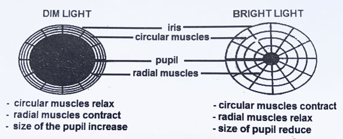

Learning Objectives
By the end of this lesson, you should be able to:
- Describe the process of image formation in the mammalian eye
- Explain how the eye accommodates to focus on distant and near objects
- Explain how the iris controls the amount of light entering the eye
- Describe the trichromatic theory of colour vision and how it explains the perception of different colours
Functions of the Mammalian Eye
Image Formation
- Light rays from an external object passes through the cornea, aqueous humor, lens, and vitreous humor before reaching the retina.
- The cornea and lens refract light rays to focus them onto the retina.
- The image formed on the retina is real, inverted and smaller than the actual object.
- The photoreceptor cells in the retina (rods and cones) convert the light rays into electrical impulses, which are transmitted to the brain via the optic nerve for processing and interpretation.
- An upright impression of the nature, size, colour and distance of the object from the eye is perceived in the brain.
Accommodation
Accommodation is the ability of the eye lens to change its focal length to focus distant and near objects on the fovea of the retina.
Focusing on Distant Objects
- When focusing on distant objects, the ciliary muscles relax, causing the suspensory ligaments to become taut.
- The lens becomes thinner and flatter. This increases its focal length and allows it to focus light rays from distant objects onto the fovea of the retina. The person then sees the distant objects clearly.
Focusing on Near Objects
- When focusing on near objects, the ciliary muscles contract, causing the suspensory ligaments to become relaxed.
- The lens becomes thicker and more curved. This decreases its focal length and enables it to focus light rays from near objects onto the fovea of the retina. The person then sees the near objects clearly.
Control of amount of light entering the eye
- The iris controls the amount of light entering the eye by adjusting the size of the pupil.
- In bright light, the circular muscles of the iris contract, causing the pupil to constrict and reduce the amount of light entering the eye.
- In dim light, the radial muscles of the iris contract, causing the pupil to dilate and allow more light to enter the eye.

Control of light intensity
NB: In bright light, the photosentsitive pigment is bleached, so when a person moves from a bright to a dim environment, it takes time for the pigment to regenerate. So, the person may not see clearly at first as the pigment is still regenerating.
Colour vision
- Colour vision is the ability of the eye to distinguish different colours of light. This is primarily achieved by the cone cells in the retina, which are sensitive to different wavelengths of light.
- According to the trichromatic theory, there are three types of cone cells, each sensitive to a specific range of wavelengths corresponding to red, green, and blue light.
- Each type of cone cell contains a different photopigment (iodopsin) that absorbs light at a specific wavelength, allowing the eye to perceive a wide range of colours. For example, equal stimulation of all three types of cone cells results in the perception of white light; equal stimulation of of red and green cone cells results in the perception of yellow light.
Summary
The mammalian eye functions to form images, accommodate to focus on objects at different distances, control the amount of light entering the eye, and enable colour vision. The cornea and lens work together to focus light onto the retina, while the iris adjusts the pupil size to regulate light intensity. Cone cells in the retina allow for the perception of different colours based on the trichromatic theory.
Revision questions
1. Describe the process of image formation in the mammalian eye.
2. Explain how the eye accommodates to focus on distant and near objects.
3. How does the iris control the amount of light entering the eye?
4. Describe the trichromatic theory of colour vision and how it explains the perception of different colours.